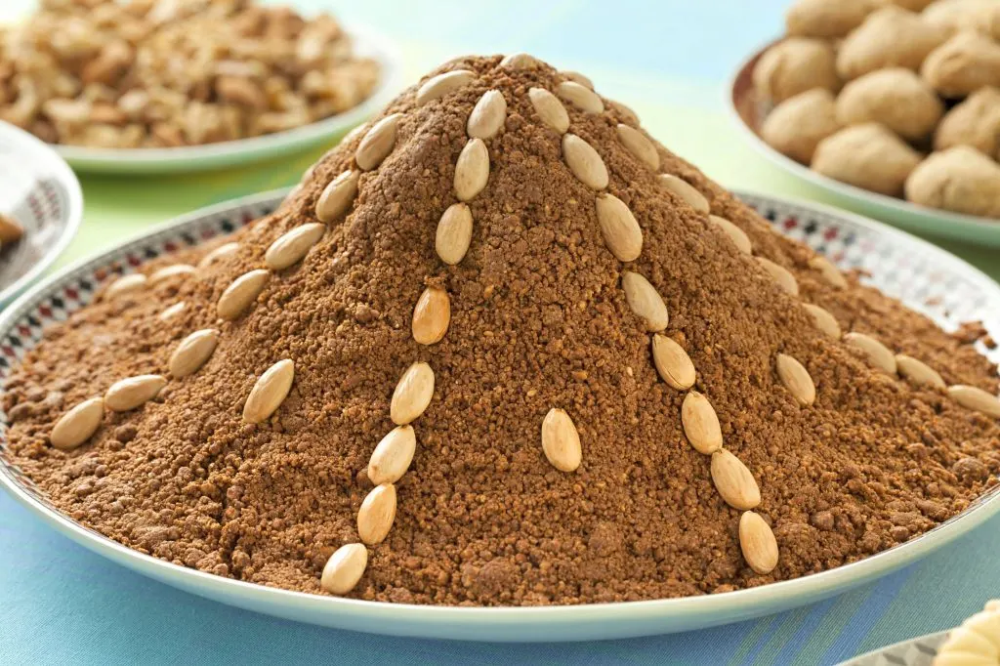

Sellou

Sfouf is a traditional Moroccan sweet that doesn’t need baking. It can also be called Sellou or Zumita and is made from toasted sesame seeds, roasted almonds and flour that has to be previously oven-roasted until brown.
Ingredients:
- anything you'd like you can add
- 1 kg flour
- 1 kg almonds
- 1 kg peanuts
- 1kg golden brown sesame seeds
- 1/4 kg powdered sugar or honey
- 2 tablespoons ground anise seeds
- 2 tablespoons cinnamon
- Sift out extras and wash the ingredients that need to washed or sifted
- Drain and dry the washed ingredients
- Toast the ingredients
- Grind items that aren't powder
- Mix all ingredients and add oil as needed